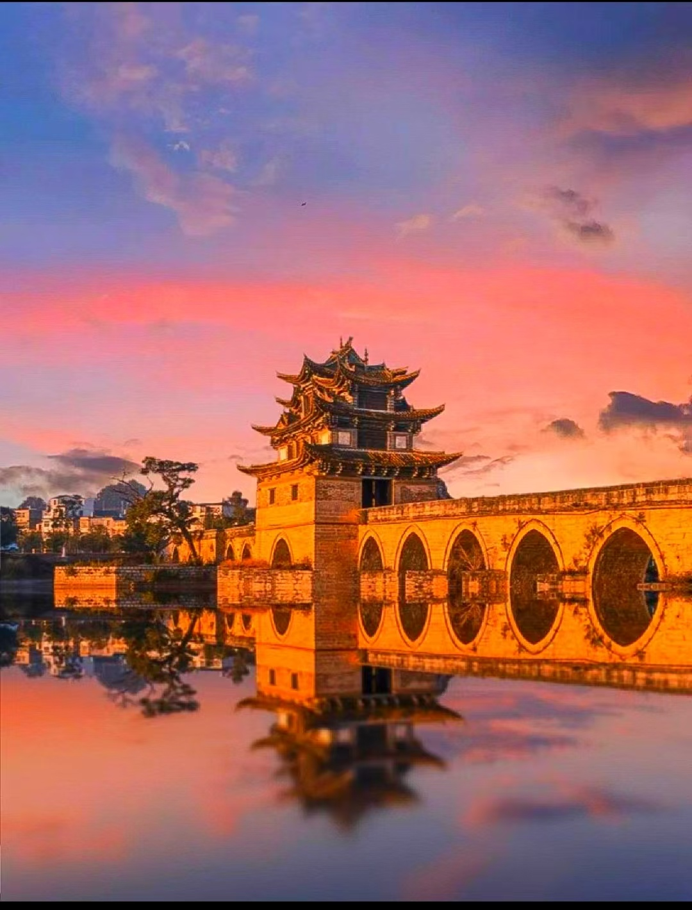
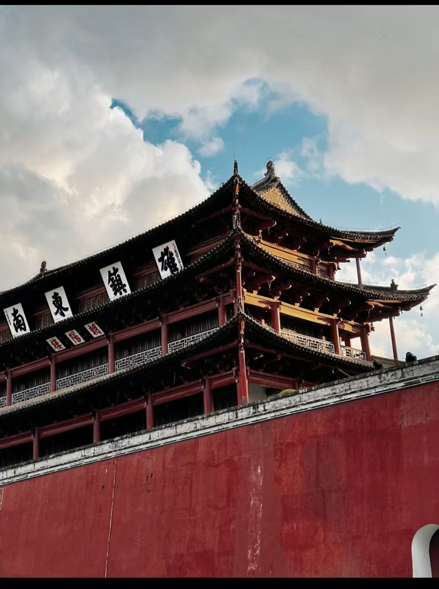

建水，古称临安，位于云南红河州，是一座拥有1200余年历史的文化名城。青石板路、古井深巷、烧烤香气，组成了这座活着的古城。
朝阳楼、朱家花园、双龙桥、建水文庙，明清建筑保存完好。漫步临安路，中原文化与边地风情交融。
建水美食以烧豆腐最为出名，围炉而坐，蘸腐乳蘸水，一口满足。草芽、汽锅鸡、凉米线同样令人难忘。


建水的美，在于不刻意取悦。来建水住几天，在米轨小火车上摇晃，在豆腐摊前消磨傍晚。